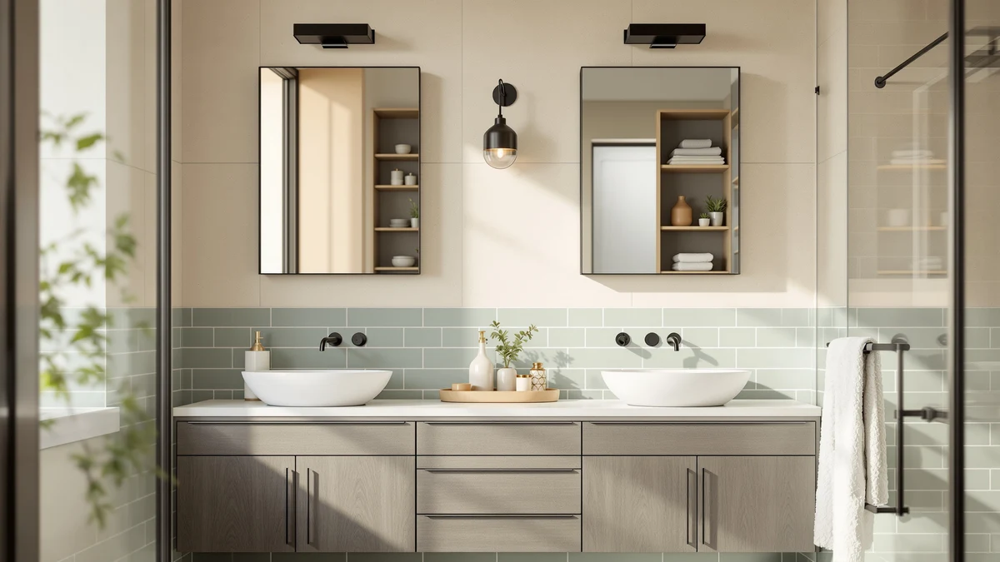

Dictac Medicine Cabinet Bathroom Mirror Cabinet Review (2026): Worth It?


Quick Answer
The DICTAC Medicine Cabinet Bathroom Mirror Cabinet pairs a mirrored three-door front with 27.6 by 23.62 inches of wall-mounted storage, built for bathrooms that need a mirror and cabinet space in one fixture instead of two. At $92.27, it compares well against the floor-standing VASAGLE, Homhedy and GRUSIGN cabinets covered below if wall space, not floor space, is what you have to work with.
Our pick: DICTAC Medicine Cabinet Bathroom Mirror, $92.27 Check Price on Amazon
Things to Know Before You Buy
- This DICTAC Medicine Cabinet Bathroom Mirror Cabinet review covers a wall-mounted unit, so it frees up floor space in a way none of the three freestanding alternatives below can match.
- Each of the three mirrored doors opens onto its own compartment, and the three adjustable shelves inside are rated to hold about 10 kg (22 pounds) apiece, per the manufacturer.
- At 27.6 by 23.62 inches overall, it is sized for a single vanity mirror spot rather than a full wall, closer in scale to the wall-mounted mirror cabinets in our broader roundup than to a floor tower.
- The VASAGLE, Homhedy and GRUSIGN alternatives covered later are all roughly 67 inches tall, freestanding, and priced within a dollar of each other at $89.99, so the DICTAC is the only wall-mounted option in this comparison.
- No verified owner ratings are listed yet for any of the four products in this review, so every durability claim below comes from the manufacturer's spec sheet, not a track record of owner feedback.
This DICTAC Medicine Cabinet Bathroom Mirror Cabinet review looks at whether a wall-mounted, mirror-fronted cabinet can do the job of both a mirror and a storage tower in a bathroom that has wall space but not much floor space. Bathrooms rarely have room for a separate standing cabinet next to the vanity, so a mirror cabinet has to earn its spot by replacing a plain mirror with real storage behind it. At $92.27 for a 27.6 by 23.62 inch frame with three mirrored doors and three adjustable shelves, the DICTAC promises exactly that. We compared its build, dimensions and price against three freestanding storage towers to see whether the listing backs up what it claims for a small bathroom.
Wall-mounted medicine cabinets solve a different problem than floor cabinets: you need storage that does not eat into walking space, and ideally a mirror you were going to install anyway. The DICTAC Medicine Cabinet Bathroom Mirror Cabinet targets that gap, while the VASAGLE Tall Storage Cabinet, the Homhedy 67" H Tall Bathroom and the GRUSIGN 67" Tall Bathroom Storage, all covered later as alternatives, take the opposite approach with freestanding floor towers. The specs tell us which approach fits your bathroom better, and who should pick a floor cabinet over a wall-mounted one instead.
Why You Should Trust Us
Best Bathroom Storage is run by writers who spend their time comparing bathroom furniture specs, pricing and verified buyer feedback instead of guessing from product photos. Ilane Tall, our home and bath expert, has covered dozens of storage cabinets, mirror cabinets and vanity organizers for this site. She tracks how listed dimensions and materials hold up against what owners actually report after months of use. For this DICTAC Medicine Cabinet Bathroom Mirror Cabinet review, we cross-checked the manufacturer's listed measurements and shelf weight rating against the VASAGLE, Homhedy and GRUSIGN alternatives, and we did not take the marketing copy at face value. We do not run a fake testing lab, and we do not claim to have mounted any of the cabinets we cover. Instead, we dig through verified listings and compare specs line by line to catch when a description overstates what a product can realistically deliver.
Our Research Experience
We did not hang the DICTAC Medicine Cabinet Bathroom Mirror Cabinet on a wall ourselves. Instead, we compared its listed specifications, mirror configuration and price against three competing freestanding cabinets, and we weighed what the manufacturer's own measurements and feature list claim about the mirrored frame. The listing rates each of the three adjustable shelves to hold about 10 kg. That number matters more on a wall-mounted cabinet than a floor model, since the shelves hang off wall anchors instead of a solid base, and we would not treat that rating as gospel until owner feedback backs it up. We lined that up against the raw dimensions and price of the VASAGLE, Homhedy and GRUSIGN alternatives to see where the DICTAC earns its spot in this review and where a freestanding tower makes more sense for your bathroom.
Overview & Specs

DICTAC Medicine Cabinet Bathroom Mirror
What we like
- Three mirrored doors double as a vanity mirror, so you skip buying a separate one
- Wall-mounted design uses zero floor space, unlike the three freestanding alternatives below
- Three adjustable shelves move in a 5-centimeter range and are rated to hold 10 kg each, per the manufacturer
- Hidden grooves on each door make the cabinet easier to open than a flush handle-free front
Flaws but not dealbreakers
- Wall mounting means you need to anchor it into studs or use the right wall hardware, unlike a freestanding tower you set down on the floor
- At 27.6 by 23.62 inches, it covers less wall area than a full vanity mirror, so it may not fully replace an existing large mirror
- No verified owner reviews are available yet to confirm the shelf weight rating holds up over time
| Material | Metal / wood |
| Size | 27.6x23.62 inch |
The DICTAC Medicine Cabinet Bathroom Mirror Cabinet is built around three mirrored doors that combine a vanity mirror and enclosed storage in a single wall-mounted frame. At 27.6 by 23.62 inches, it is sized to replace a standard mirror rather than cover a full wall, and the wall-mounted design means it adds storage without taking up any of the floor space that the VASAGLE, Homhedy and GRUSIGN alternatives below require.
Behind the mirrored doors, three adjustable shelves move up or down in a 5-centimeter range, and the manufacturer rates each shelf to hold about 10 kg, enough for razors, bottles and everyday toiletries without the shelf sagging. A hidden groove at the bottom of each door gives you a grip point to open the cabinet, a small detail that matters on a flush mirrored front with no visible handle. At $92.27, this DICTAC Medicine Cabinet Bathroom Mirror Cabinet costs slightly more than the three freestanding alternatives in this comparison, a premium that buys you a mirror you would otherwise have to purchase separately.
What We Liked
The dual-purpose design is the strongest argument for this DICTAC Medicine Cabinet Bathroom Mirror Cabinet. It replaces a plain vanity mirror with three mirrored doors that also conceal storage, so you are not paying for a mirror and a cabinet separately. The wall-mounted build is the other clear advantage over the alternatives in this comparison: at $92.27 it costs a little more than the VASAGLE, Homhedy or GRUSIGN, but none of those freestanding towers can free up floor space the way a wall-mounted cabinet does. The 10 kg shelf rating and 5-centimeter adjustment range also give it more flexibility than a fixed-shelf medicine cabinet, letting you fit taller bottles on one shelf and smaller items on another.
What Could Be Better
Installation is the main trade-off with this DICTAC Medicine Cabinet Bathroom Mirror Cabinet. Mounting it securely means anchoring into wall studs or using appropriate drywall hardware, a step that a freestanding cabinet like the VASAGLE or Homhedy simply does not require. Anyone renting or unwilling to drill into a bathroom wall should weigh that against the floor-standing alternatives below. The 27.6 by 23.62 inch size is also modest for a bathroom mirror, so it likely will not fully replace a large existing vanity mirror if you need wide coverage over a double sink.
There is no verified owner feedback yet on this specific listing, so the 10 kg shelf rating and the hinge durability both come from the manufacturer alone. That is typical for a recently listed bathroom cabinet, but nobody has checked yet how that rating or those hinges hold up after months of real bathroom humidity and daily door use.
Who Is It For?
The DICTAC Medicine Cabinet Bathroom Mirror Cabinet fits a bathroom that has wall space above the vanity but not much floor space to spare for a separate storage tower. It is a strong pick if you are already planning to install a mirror and would rather get hidden storage in the same fixture instead of buying two separate pieces. It is not the right choice if your walls cannot support an anchored cabinet, or if you need a mirror wider than 27.6 inches to cover a double-sink vanity.
Renters who cannot drill into bathroom walls, or anyone who needs a lot of visible counter-adjacent storage rather than a mirror, will likely get more use out of the freestanding VASAGLE, Homhedy or GRUSIGN alternatives covered below. Those three trade the built-in mirror for a taller, deeper freestanding frame that sits directly on the floor.
Alternatives to Consider
If the DICTAC Medicine Cabinet Bathroom Mirror Cabinet's wall-mounted design or 27.6-inch mirror doesn't match what your bathroom needs, these three alternatives trade the mirror for a taller, freestanding floor cabinet instead: a slim lighted tower from VASAGLE, a barn-door-and-drawer unit from Homhedy, and a two-drawer tower from GRUSIGN. Check out our narrow bathroom storage cabinets roundup for more freestanding options in this same size class.

Best Value
VASAGLE Tall Storage Cabinet with
An 11.8-inch-square freestanding tower with a door-activated light strip and a reversible door swing, built for narrow floor gaps rather than wall mounting.
$89.99
Check Price on Amazon
Best Value
Homhedy 67" H Tall Bathroom
Two reversible barn doors plus a drawer on a 67-inch freestanding frame, a better fit than the wall-mounted DICTAC if you want closed storage and a dedicated drawer on the floor.
$89.99
Check Price on Amazon
Best Value
GRUSIGN 67" Tall Bathroom Storage
Two doors, two drawers and adjustable shelves on a 67-inch freestanding frame, the most drawer space of any alternative to the DICTAC in this comparison.
$89.99
Check Price on AmazonFrequently Asked Questions
Is the DICTAC Medicine Cabinet Bathroom Mirror Cabinet wall-mounted or freestanding?
It is wall-mounted. All three mirrored doors and the 27.6 by 23.62 inch frame attach to the wall, so it adds storage without using floor space, unlike the three freestanding alternatives covered in this review.
How much weight can the DICTAC cabinet's shelves hold?
The manufacturer rates each of the three adjustable shelves to hold about 10 kg, roughly 22 pounds, with a 5-centimeter adjustment range so taller bottles and jars still fit.
What is the difference between the DICTAC cabinet and the VASAGLE, Homhedy and GRUSIGN alternatives?
The DICTAC mounts on the wall and puts a mirror on every door, while the VASAGLE, Homhedy and GRUSIGN are freestanding floor cabinets around 67 inches tall with no mirror. Pick the DICTAC for wall storage and a mirror in one fixture, and one of the floor cabinets if you have ground space to spare but not wall space.
Final Verdict
This DICTAC Medicine Cabinet Bathroom Mirror Cabinet review comes down to a straightforward trade-off: a wall-mounted mirror cabinet that frees up the floor against three freestanding towers that trade that mirror for more floor-based storage. For a bathroom with wall space to spare over the vanity and no room for a standing cabinet, the DICTAC is the practical pick, and getting a mirror and storage in one fixture offsets its slightly higher $92.27 price. If your bathroom has more floor space than wall space, or your walls cannot support an anchored cabinet, the VASAGLE, Homhedy or GRUSIGN alternatives covered above make better use of it. Either way, DICTAC is the brand worth starting with if a wall-mounted mirror cabinet is what your bathroom actually needs.